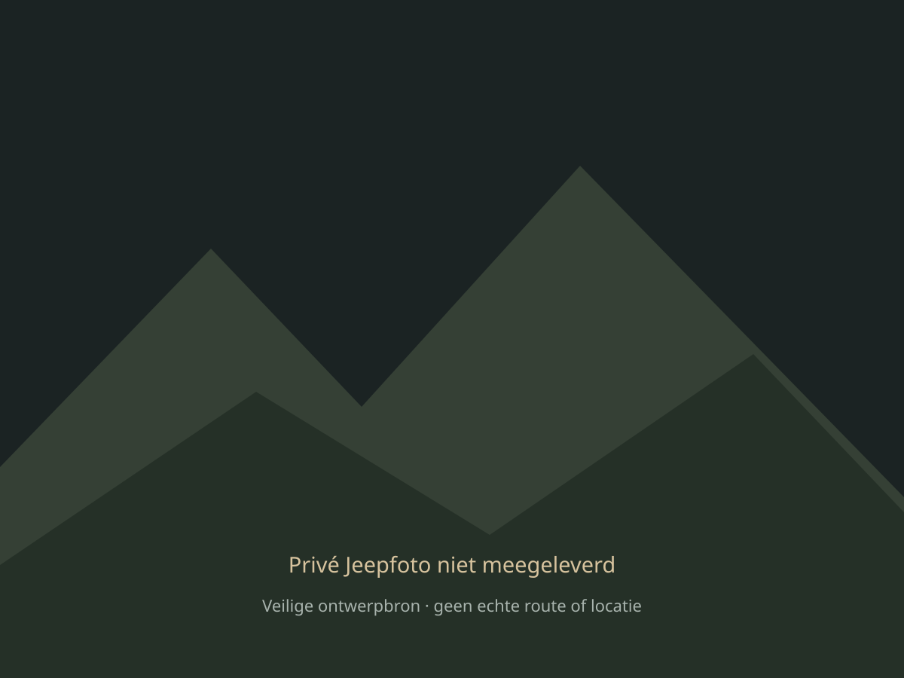

RitKompas

Mijn Jeep
Wrangler 4xe · 2021
Kies je voorkeur voor het ritvoorbeeld.
Nog geen voorkeur gekozen.Laatste rit
Bekijk allesUtrecht → Amersfoort
08:12 – 08:47 · 35 km · demo
▣ Zakelijk›01 · Home / Voorbeeldgegevens, geen echte registratie.
Jouw ritten
Overzichtelijk, tot de laatste kilometer.
Utrecht → Amersfoort
08:12 – 08:47 · 35 km · demo
▣ Zakelijk› ↗Amersfoort → Utrecht
12:05 – 12:37 · 28 km · demo
⌂ Privé› ↗Utrecht → Nieuwegein
14:20 – 14:43 · 22 km · demo
▣ Zakelijk›Tik op een rit voor details. Dit zijn fictieve voorbeelden, niet jouw locatiegeschiedenis.
02 · Ritten / Geef feedback op de lijst en filters.
Utrecht → Amersfoort
Fictieve voorbeeldrit · geen echte locatiegeschiedenis
Hier komt jouw opgenomen route
Schematische illustratie, geen echte kaart03 · Ritdetails / Route, cijfers en classificatie.
Alles op een rij.
Van onderweg naar overzicht.
Een helder overzicht voor je administratie.
Fictieve cijfers · geen fiscale controle of vergoeding berekend.Beoordeel hier de indeling en leesbaarheid. De voorbeeldcijfers zijn geen test van fiscale juistheid.
04 · Rapporten / Maandoverzicht en export.
Mijn Jeep
Gemaakt voor jouw Wrangler.
Mijn Jeep
Wrangler 4xe · 2021
05 · Mijn Jeep / Geen verbinding met de echte auto.
Wat voor rit
wordt dit?
Probeer de keuze voor Zakelijk of Privé. Er wordt geen echte rit gestart of opgeslagen.
06 · Ritkeuze / Beoordeel de twee hoofdknoppen.
Onderweg.
Voorbeeldclassificatie · Jeep Wrangler 4xe
Er wordt niets gemeten: geen GPS, Bluetooth, snelheid of achtergrondactiviteit.
07 · Actieve rit / Een illustratie, geen live dashboard.
Instellingen
Jouw ritten. Jouw controle.
Appkleur
Kies een accent voor alle schermen.
Expedition geselecteerd.
Standaardadressen
Stel apart een zakelijk en privéadres in. Deze preview gebruikt de adressen nog niet voor ritten.
Niet naar Sites, Cloud of de rittenadministratie verstuurd.
Adressen zijn privé. Ze blijven in deze browseropslag en kunnen verdwijnen als je browsergegevens wist. Geen automatische adreszoekdienst of GPS.
08 · Instellingen / Lokale ontwerpvoorkeuren, geen machtigingen.
Jouw aanwijzingen.
Klein detail of groot idee? Schrijf op wat je anders wilt zien.
Geen adressen, ritgegevens of aanmeldcodes invoeren. Niets gaat automatisch naar mij of Cloud. Deel het tekstbestand later zelf in dit gesprek. Lokale opslag is afhankelijk van de browser/bestandsviewer.
Eerder bewaard
- Nog geen opmerkingen opgeslagen.
09 · Feedback / Jouw tekst blijft op je apparaat.
De app, scherm
voor scherm.
Klik door het ontwerp en geef aanwijzingen op schermnummer. Deze preview staat los van de werkende backend.
01Home→02Ritten en filters→03Ritdetails en route→04Rapporten→05Mijn Jeep→06Zakelijk of Privé→07Actieve rit→08Instellingen→09Jouw aanwijzingen→Het Willys-geïnspireerde Canva-icoon is als richting goedgekeurd. Het definitieve iOS-icoon wordt apart als juiste asset aangeleverd; het kompassymbool hier is een tijdelijke interfacegrafiek.
00 · Index / Browserpreview, geen geïnstalleerde iPhone-app.